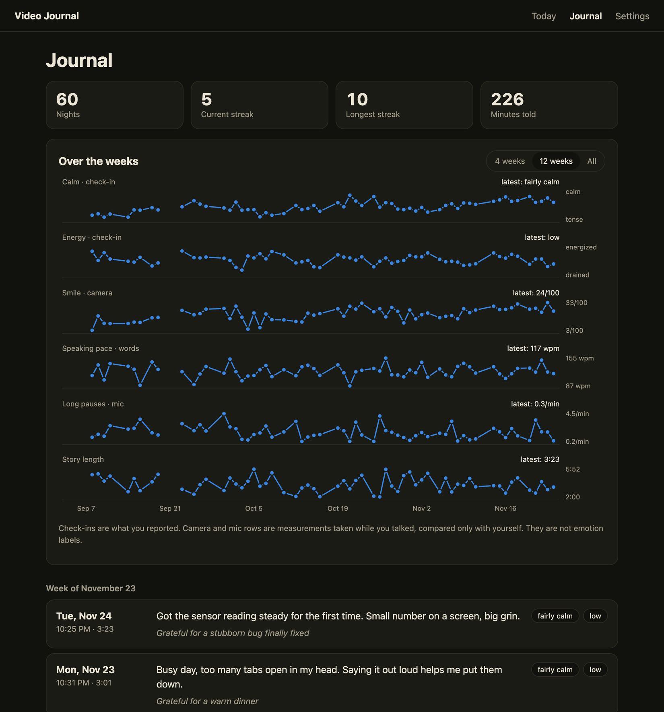
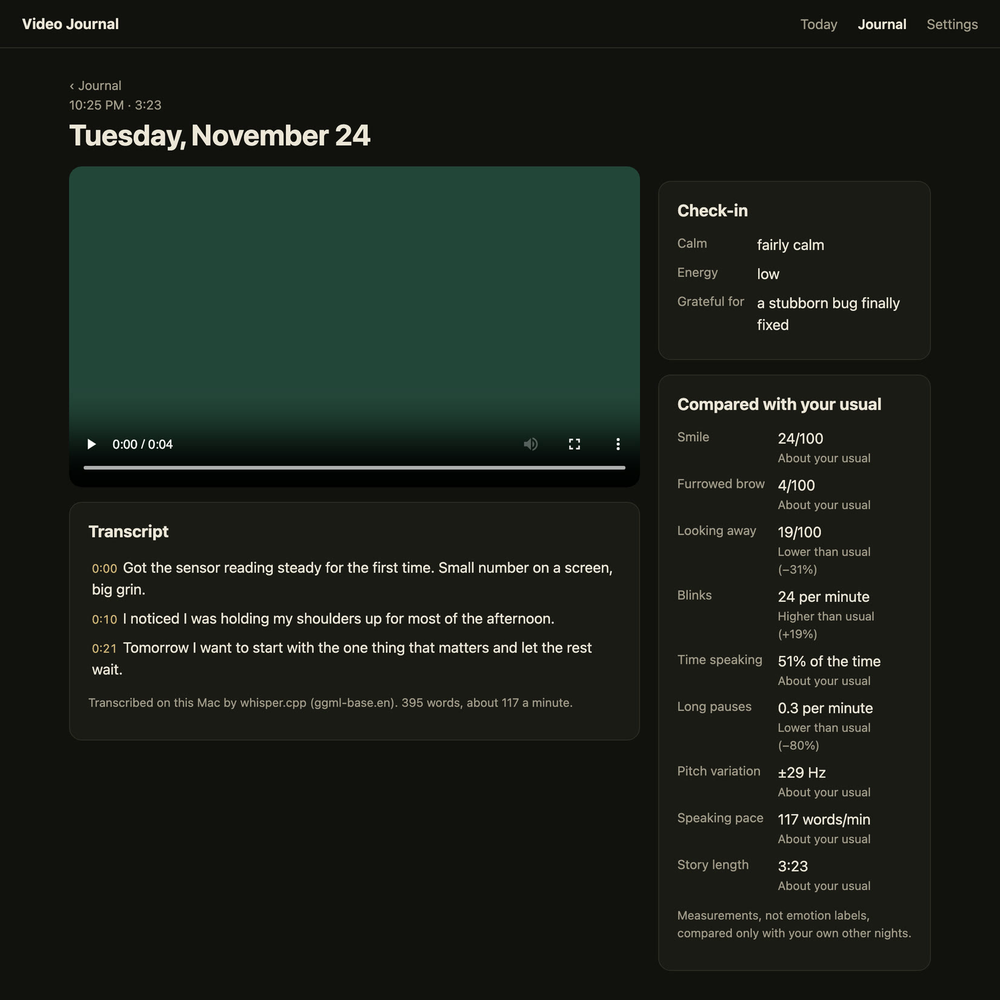

Video Journal
A short nightly video journal: talk to the camera for a few minutes, with no editing and no correcting yourself, and watch your own story and mood take shape over weeks.
Each night has three steps: tell the day's story to the camera, say a few calming phrases out loud, then rate calm and energy and note one thing you're grateful for.
Everything stays on the computer. Recordings are transcribed locally with whisper.cpp, and face and voice measurements (smile, speaking pace, long pauses) run in the browser. The journal page charts them next to your own calm and energy ratings, compared only with your own other nights. They are measurements, not emotion labels.

